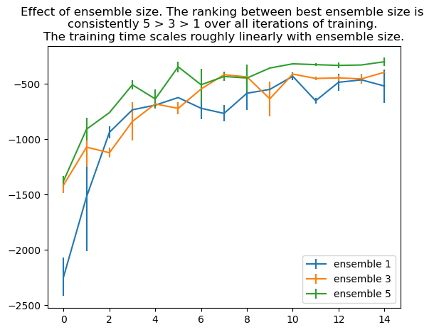

(n = 500, n_layers = 2, size = 250) gives the best loss curves, and the qualitatively closest fit between real rollouts and example rollouts. It is better than (n = 5, n_layers = 2, size = 250) because it is the same architecture trained for more steps (thus closer to convergence), andit is better than (n = 500, n_layers = 1, size = 32) because the neural network is bigger and thus has a higher capacity.
Problem 2: Action selection by learned dynamics model and given reward function
Method:
collect data with random policy
train dynamics model \(f_\theta\)
evaluate the MPC policy using \(f_\theta\)
compare Train AverageReturn (from random policy) to Eval AverageReturn (from MPC policy).
Data put in hw4_q2_obstacles_singleiteration_obstacles-cs285-v0_29-10-2022_11-32-38
Expect Train AverageReturn to be around -160 and Eval AverageReturn to be around -70 to -50. Confirmed (actually, my eval return is a bit too good!): Eval_AverageReturn : -29.98, Train_AverageReturn : -164.5.
Code
df = read_tb(base, 'hw4_q2_obstacles_singleiteration_obstacles-cs285-v0_29-10-2022_11-32-38')print(df)plt.scatter(1, get_data_array(df, 'Eval_AverageReturn'), label="Eval")plt.scatter(1, get_data_array(df, 'Train_AverageReturn'), label="Train")plt.title("plot of Train AverageReturn and Eval AverageReturn")plt.legend()plt.show()
q4_e1 = read_tb(base, 'hw4_q4_reacher_ensemble1_reacher-cs285-v0_29-10-2022_11-46-43')q4_e3 = read_tb(base, 'hw4_q4_reacher_ensemble3_reacher-cs285-v0_29-10-2022_11-46-44')q4_e5 = read_tb(base, 'hw4_q4_reacher_ensemble5_reacher-cs285-v0_29-10-2022_11-46-44')dfs = [(q4_e1, "ensemble 1"), (q4_e3, "ensemble 3"), (q4_e5, "ensemble 5")]for df, label in dfs: xs=range(len(get_data_array(df, "Eval_AverageReturn"))) ys=get_data_array(df, 'Eval_AverageReturn') yerrs=get_data_array(df, 'Eval_StdReturn') plt.errorbar(xs, ys, yerr=yerrs, label=label)plt.title("""Effect of ensemble size. The ranking between best ensemble size is consistently 5 > 3 > 1 over all iterations of training. The training time scales roughly linearly with ensemble size.""")plt.legend()plt.show()

Code
q4_n100 = read_tb(base, 'hw4_q4_reacher_numseq100_reacher-cs285-v0_29-10-2022_11-46-44')q4_n1000 = read_tb(base, 'hw4_q4_reacher_numseq1000_reacher-cs285-v0_29-10-2022_11-46-44')dfs = [(q4_n100, "numseq 100"), (q4_n1000, "numseq 1000")]for df, label in dfs: xs=range(len(get_data_array(df, "Eval_AverageReturn"))) ys=get_data_array(df, 'Eval_AverageReturn') yerrs=get_data_array(df, 'Eval_StdReturn') plt.errorbar(xs, ys, yerr=yerrs, label=label)plt.title(""" Effect of the number of candidate action sequences. The reward is higher at first for 1000 samples, but their gap disappears. The training time is insensitive to this number.""")plt.legend()plt.show()
Code
q4_h5 = read_tb(base, 'hw4_q4_reacher_horizon5_reacher-cs285-v0_29-10-2022_11-46-43')q4_h10 = read_tb(base, 'hw4_q4_reacher_horizon15_reacher-cs285-v0_29-10-2022_11-46-43')q4_h15 = read_tb(base, 'hw4_q4_reacher_horizon30_reacher-cs285-v0_29-10-2022_11-46-43')dfs = [(q4_h5, "horizon 5"), (q4_h10, "horizon 10"), (q4_h15, "horizon 15")]for df, label in dfs: xs=range(len(get_data_array(df, "Eval_AverageReturn"))) ys=get_data_array(df, 'Eval_AverageReturn') yerrs=get_data_array(df, 'Eval_StdReturn') plt.errorbar(xs, ys, yerr=yerrs, label=label)plt.title("""Efffect of planning horizon. The ranking between best horizon length is consistently 15 > 30 > 5 over all iterations of training. The training time scales roughly linearly with planning horizon.""")plt.legend()plt.show()
Summary of findings:
The model performs better with larger ensemble than with a smaller one. 5 heads is better than 3, which is better than 1.
The model performs better with intermediate planning horizon. Too long, and the noise in the model dominates. Too short, and the actions are short-sighted.
The model performs about as badly with 100 random candidate action sequences as 1000. We are unclear about the reason.
Most of the time is spent on model rollouts (which calls a neural network), rather than on evaluating trajectories (which calls much simpler arithmetic functions). This explains why the training time scales roughly linearly with ensemble size and horizon length, but is insensitive to number of candidate action sequences.
Problem 5: Compare MBRL using random-shooting and CEM on the cheetah env
Because CEM can be much slower than random-shooting, we will only run MBRL for 5 iterations for this problem. We will try two hyperparameter settings for CEM and compare their performance to random-shooting.